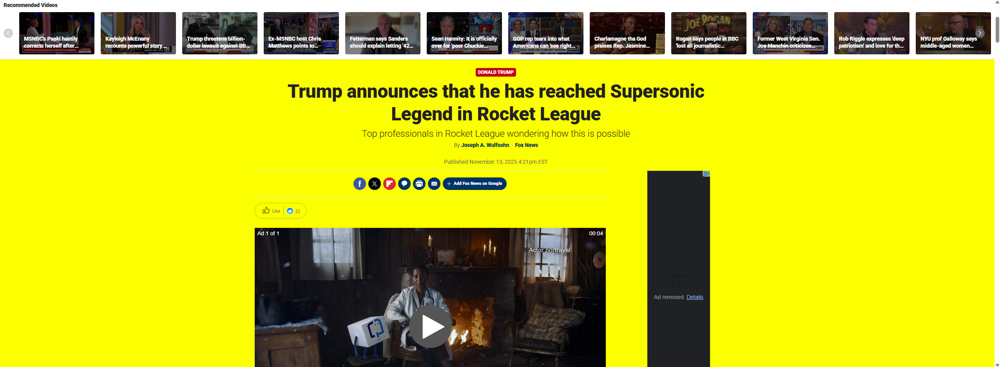

My Dev Tools Vandalism
I used browser developer tools to temporarily "vandalize" a website. Below is a screenshot showing my changes. These edits only appeared on my computer and did not affect the actual website.

What I "Vandalized"
Describe the changes you made to the website using the browser's developer tools. Some potential questions to consider:
- What text did you edit? - I edited the headline of the article
- What CSS properties did you modify? - I changed the color of the article box and the padding in the page
- What made your edits interesting or amusing? - I think the headline is amusing and the color is jarring because fox is not usually yellow
- Did you understand why some changes worked and some didn't? - Somewhat. I had a little bit of trouble navigating the inspect elements and couldn't exactly figure out where the CSS changes were made
- Why did you choose the changes you did? - It seemed like something that was challenging enough but still simple to give me something to latch on to
- Were you able to understand how the HTML and CSS worked together to make the changes you made? - Yes, through this course and the last one I am beginning to udnerstand how HTML and CSS interact
- Do you think you have a better sense of how dev tools can be used while crafting your own webpages? - I don't think I exactly have what I need to be proficient but I think that I am starting to understand the things that can be done.